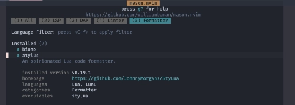
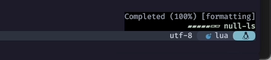
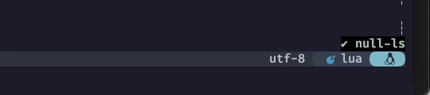
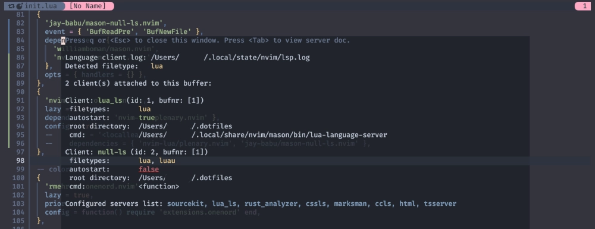

mason-null-ls
私はたぶん、Mimi おばさんの役割を引き継いだんだと思う。
So this is Christmas
And what have you done?
さあ クリスマスがやってきた
君にはどんな1年だった？
もう色々見透かされているとは思ってますが、 そんなものは気にせず、ど真ん中をぶっちぎります❗
mason-null-lsのお通りだー❗
mason-null-ls bridges mason.nvim with the null-ls plugin - making it easier to use both plugins together.
mason-null-lsはmason.nvimとnull-lsプラグインの橋渡しをします。
mason.nvimもnull-ls (none-ls)も、とっても見覚えあるやつですね😉
Another year over
And a new one just begun
今年ももう終わる
そして新しい年が始まるんだ
Introduction
mason-null-ls.nvim closes some gaps that exist between mason.nvim and
null-ls. Its main responsibilities are:
mason-null-ls.nvimはmason.nvimとnull-lsの間に存在するいくつかのギャップを埋めます。
主な役割は以下の通り：
- provide extra convenience APIs such as the
:NullLsInstallcommand - allow you to (i) automatically install, and (ii) automatically set up a predefined list of sources
- translate between
null-lssource names andmason.nvimpackage names (e.g.haml_lint<->haml-lint)
It is recommended to use this extension if you use mason.nvim and null-ls.
Please read the whole README.md before jumping to Setup.
NullLsInstallコマンドのような便利な API を提供する。- (i) 自動インストール、(ii) あらかじめ定義されたソースリストの自動セットアップ。
null-lsソース名とmason.nvimパッケージ名の変換 (例:haml_lint<->haml-lint)
mason.nvimとnull-lsを使う場合はこの拡張機能を使うことを推奨します。
Setup に入る前に README.md を全て読んでください。
Note: this plugin uses the null-ls source names in the APIs it exposes - not mason.nvim package names.
このプラグインが公開する API では、mason.nvimのパッケージ名ではなくnull-lsのソース名を使用します。
And so this is Christmas
I hope you had fun
そう クリスマスがやってきたんだ
楽しんでいるかな
Requirements
- neovim >= 0.7.0
- mason.nvim
- null-ls.nvim
これもやっぱり特に難しい要求はありませんが、
このサイトではnull-lsに代えて none-ls を使用していきます。
...ややこしいんですけども😮
The near and the dear ones
The old and the young
近くて 大切な人たち
お年寄りも 若者も
Installation
{
"jay-babu/mason-null-ls.nvim",
event = { "BufReadPre", "BufNewFile" },
dependencies = {
"williamboman/mason.nvim",
"jose-elias-alvarez/null-ls.nvim",
},
config = function()
require("your.null-ls.config") -- require your null-ls config here (example below)
end,
}
configは次の項で行うとして、インストール部分を先に済ませてしまいましょう❗
{
'jay-babu/mason-null-ls.nvim',
event = { 'BufReadPre', 'BufNewFile' },
dependencies = {
'williamboman/mason.nvim',
'nvimtools/none-ls.nvim',
},
},
null-ls.nvimをnone-lsに変えるのを忘れないで😉
A very merry Christmas
And a happy New Year
Let's hope it's a good one
Without any fear
良い年でありますように
なにも心配ないよ
Automatic Setup Usage
Automatic Setup is a need feature that removes the need to configure null-ls for supported sources.
Sources found installed in mason will automatically be setup for null-ls.
自動セットアップは、サポートされているソースに対して null-ls を設定する必要性を取り除く機能です。
mason にインストールされたソースは自動的に null-ls 用にセットアップされます。
例えば、それはもうめちゃくちゃ言語プロフェッショナルが扱う場合は、
handlersに個別に書いた方がきっちりできるはずです。
...ただ、そうでもない場合、言語ごとに一個一個の設定をしていかなきゃならないってなると、
mason.nvimが提供してくれるお手軽さが、かなり損なわれてしまいます。
でも、それではあまりにも勿体ないので、 これを理解した上で使用する分にはいいんじゃないかな〜って思うことにします❗そうします😆
And so happy Christmas (War is over) 1
For black and for white
For yellow and red ones
黒と白のために
黄色と赤だって
Let's stop all the fight
すべての争いをやめよう
Example Config
require("mason").setup()
require("mason-null-ls").setup({
handlers = {},
})
See the Default Configuration section to understand how the default configs can be overridden.
デフォルト設定を上書きする方法については、 Default Configurationセクションを参照してください。
このページではmasonのsetup()はもう済んでいるものとして特に触れません。
その上で、ここもlazy.nvimをもっと頼って (怠けちゃって) いいと思います😪
lazy.nvimの提供するoptsオプションにパラメータを指定すると、そのままプラグインのconfig()に渡してくれます。
| Property | Type | Description |
|---|---|---|
| opts | table or fun(LazyPlugin, opts:table) | opts should be a table (will be merged with parent specs), return a table (replaces parent specs) or should change a table. The table will be passed to the Plugin.config() function. Setting this value will imply Plugin.config() |
なので、シンプルにこれだけで済ませてしまってもいいんじゃないかな😌
{
'jay-babu/mason-null-ls.nvim',
event = { 'BufReadPre', 'BufNewFile' },
dependencies = {
'williamboman/mason.nvim',
'nvimtools/none-ls.nvim',
},
+ opts = {
+ handlers = {}
+ },
},
Default Configurationを見ての通り、
デフォルトではnilになっているので、これをArrayでオーバーライドしています。
Usage
ここまでやれば、あとはMasonからインストールするだけでおっけーです❗
試しにstyluaを入れてみましょ😆

それからluaを開いて、前回も出てきたvim.lsp.buf.formatを呼んでみれば...、

ここにパワーが溜まってきただろう❗❗

そしてなんかいい感じにフォーマットされただろう⁉️
このサイトでは、パワーを溜める様子を視覚化するために16.10. fidget.nvimにて鍛え上げました 💪😤
( If it does not work well... )
パワーが上手く溜まってこない場合はluaファイルを開いた状態で:LspInfoを確認してみてください。

...もしClientにnull-lsが認識されていなければ、それは "履 い て な い" んです、PAAAANTS!! 🤷♀️
急いでnone-ls.nvim まで戻って "履 い て" 来てください 👉🩲👈
War is Over
私事ではありますが、ちょっと時間がなくてLinterには全く触れられませんでした...😅
また落ち着いたらこのへんも含めて改めてやりましょ❗
去年もおんなじようなこと言っちゃっててかわいいですね❗❗ 下手しても失敗しても、未来で笑い飛ばせばいいんです❗❗ ...はい、ごめんなさい🥹
ハッピークリスマス❗🍾 サンタさんも大喜びです🎅
愉しんできてね🤗
...あ❗もうおたのしみでしたか😸
WAR
IS
OVER!
War is over 2
戦争は終わる
If you want it
あなたがそう望むなら
War is over 3
戦争は終わった
Now
たった今
1: Happy Xmas (War Is Over) (by John & Yoko / Plastic Ono Band with the Harlem Community Choir) Wikipedia より
2: 1969年の暮れ、John と Yoko は世界11都市 (New York City, Los Angeles, Toronto, London, Ville de Paris, Amsterdam, Land Berlin, Roma, Αθήνα; Athína, 香港, 東京) の街頭にビルボードを使った大きな広告を掲げた。
3: 1971年にレコーディングした Happy Christmas (War is Over) は、やがてクリスマス・ソングの定番となった。 コーラスの「War is Over. If you want it (戦争は終わる あなたがそう望むなら)」には、いまだにビルボード・キャンペーンの精神が脈打っている。 その一方で「さあ、クリスマスがやってきた。君にはどんな1年だった？」という普遍的な歌詞により、 この歌とそれが伝えるメッセージは、毎年クリスマスシーズンのたびに人々へと届くようになった。